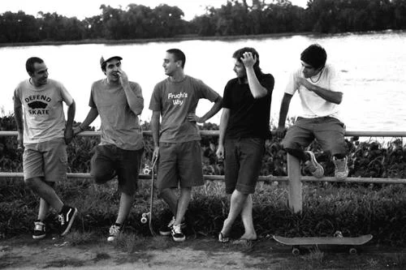

Banda argentina de hardcore punk cuyo origen se remonta a 1995, en la ciudad de Quilmes, provincia de Buenos Aires. Se les considera la banda más influyente e importante de Sudamérica en su género,con una trayectoria de más de 30 años y una extensa actividad ininterrumpida de presentaciones en vivo, giras y grabaciones.
